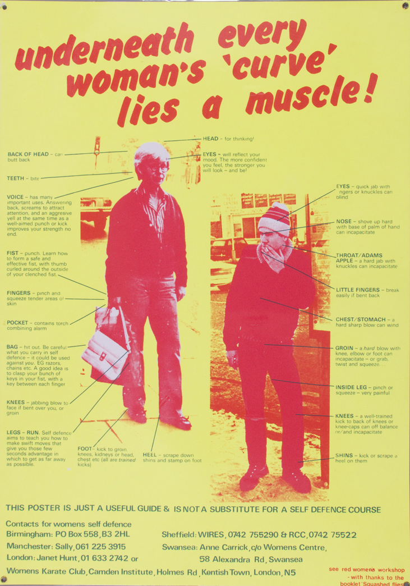

What are really practical things people should know about self-defense? For physical safety.
Part of something that people should really keep in mind for self-defense is de-escalation, you know, especially if we're thinking about not wanting police to get called and not wanting police to show up. Pepper spray is the best, most legally safe thing that you can do in terms of self-defense or defending somebody else is pepper spray because it is obviously non-lethal.
I really believe that people do need some level of individual self-defense capabilities. And that is sort of the point where we can actually start talking more about community self-defense. How do we protect each other? Something that some folks and I were doing out here or wanting to do out here… Basically, somebody we know got hate crimed when they were at a club. They were leaving and they got jumped.
So something we were thinking about doing is having a network of people who could be on call on a given night. And who could come pick others up, get them out of that situation as fast as possible.
But also making sure that you know, they know what route they need to take if something does happen. Concerns that need to be really, really planned out in advance. I think when it comes to resources for that, something that could give people like a good foothold in having a security mindset that like could even start to be I don't mean it to like sound patronizing, you know, but in the sense of like being able to have a security mindset that can make people even sort of have like that sort of foundational basis to even be able to like conceive of this sort of network.
In this case, because what we're thinking about is just how we actually make our lives more secure, not just in thinking about police, but in thinking about living your life and dealing with bigots, you know.
Lastly, you need to have a dedicated group of people. And I think that's really one of the hardest parts. You need people willing to just give up a night. To be on call, just kind of stay up. Also the likelihood of just it being boring, you know, is pretty high. Like there's a decent likelihood that nothing happens.
Even though it's very simple, it's like very realistic things that people can do.
"The safety of queers and women is never actually high on their priority list."
It can even just be like something informal, you know, it doesn't necessarily need to be like an organization I think. An organizational effort behind it would have more potential to improve it.
But you can never really expect that from the vast majority of orgs. That's not stuff that they care about or take seriously, you know? Not even thinking about typical, like electoralist kind of orgs. It's even in so-called far-lefty organizations. The safety of queers and women is never actually high on their priority list. They'll sort of spout it, but it doesn't really amount to anything. But even a Signal chat, something informal where things can be scheduled, is great.
In terms of sort of more immediate things that people can do, I would say that discussing options with people you know is one of the most realistic options. From my own experience where I try to start some sort of self-defense class and try to teach people self-defense, people are just like, ‘mm-hmm’. It's very like rah-rah in the beginning and then just gone. Nobody ever shows up to keep learning skills unless they're forced to.
It's not a priority. And I'm like in this current political climate how in the world is that not a priority? They don't want to learn the more likely scenario of kicking somebody in the shins and pepper spraying them and running away.
There’s a woman who is really skilled in Muay Thai back home, and she was just really serious about it and a lot of queer and trans people, sex workers all in this group would practice together, which was really cool. And they were always very open about inviting others they knew in.
"you need to make sure that the structure of it actually makes sense."
That is so cool, she sounds amazing.
I want to touch on security mindset, too. You need to be preparing for the most likely scenarios. If you're genuinely trying to prepare for every single possible scenario you're not going to realize how many things you're actually looking over. And how many different things you are overcompensating for. If you're thinking about the people that you would want in an organization or the tools and skills that you would most readily need for your situation, whether it's you as an individual or your group or people in your community, your neighborhood, whatever it ends up being, you need to make sure that the structure of it actually makes sense.
What are people's actual concerns? Have there been creeps in the neighborhood? Have people been getting mugged? So we could start with like situational awareness and then disabling an attacker, all this such stuff. And that's all stuff that can be learned and practiced. The tool needs to fit the actual problem.
I can't think of local groups that are openly like we teach self-defense in Chicago. A lot of it is finding one or two people that just have some of those skills. And basically convincing them to train you. When it comes to self-defense, it is a bit harder to have that immediate access to it.
We would put on Working Women's Day events where sympathetic gyms offered their space and they would promote a free women's class for self-defense. But it's always a one-off thing. Even just knowing those spaces in your community is really good. Even if they're not going to have an instructor, just being able to use the space when it's closed and things like that. Have you seen the movie Bottoms?
No.
I just watched it. It's a group of teenage girls. But you could just do the movie. It's like you and a bunch of other people in this basic gym, showing each other how to fight. You definitely would love it.
That's a fun idea. When it comes to queer people being safe and women being safer, one of the things that I always come back to, especially now being in this cybersecurity bootcamp is how much information people actually share about themselves online.
I was thinking about this as well in terms of people going over state lines to have an abortion. All of that could be pretty easily used by law enforcement depending on the situation. That is one of the first things that they're going to be looking for is the location data on your phone. Where you were sending texts, all this sort of thing. There's just a lot of things that people don't realize, like how much information they're actually sharing about themselves, even if they're just sending off a text.
Read about digital privacy for reproductive justice.
One last question: How can you connect with others if you don’t have people already in mind?
"don't just only meet people where they're at."
Get to know people who have similar concerns and interests to you. Talk with your friends about this kind of stuff. See what people are actually wanting but not just that, you know, you don't just only meet people where they're at. You should try to push them more. Which I think in some ways that's something I definitely wish I had done more. Push people a bit more to learn how to use pepper spray and basic self-defense.
I also feel like that's such a good starting point just for anything is to make a reading group around the topic that you're interested in. And come up together with like-minded people and just like start there. That’s how it worked in Bloomington, the reading group was always a space to get people who are interested in these ideas together and like actually get them involved in things.
You don't need the whole group to participate, you just need at least some people. Once you have something going, you can get people involved in other ways. That's more so true of trans women where we're often sort of socially geographically isolated from one another. So I think maybe in a different way it's figuring out how to solve issues within even just like the group you started forming. Whether it's like ‘my ex sucks. They won't leave me alone’. Or, ‘hey, there's this creep that's been following me home, or following me to the train’, you know. ‘What do I do? How do we deal with this?’ And so the organizing tactics can definitely start branching from there. It could be organizing a buddy system, it could be organizing in other ways. It's not about having set answers: if A, then B. I think knowing the general kind of ways of organizing is important and being able to relate to people. A lot of people, from mutual experiences, don't know how to talk to people. Don't know how to get to know them. That’s important.
Poster by See Red Women's Workshop
BACK TO TOP